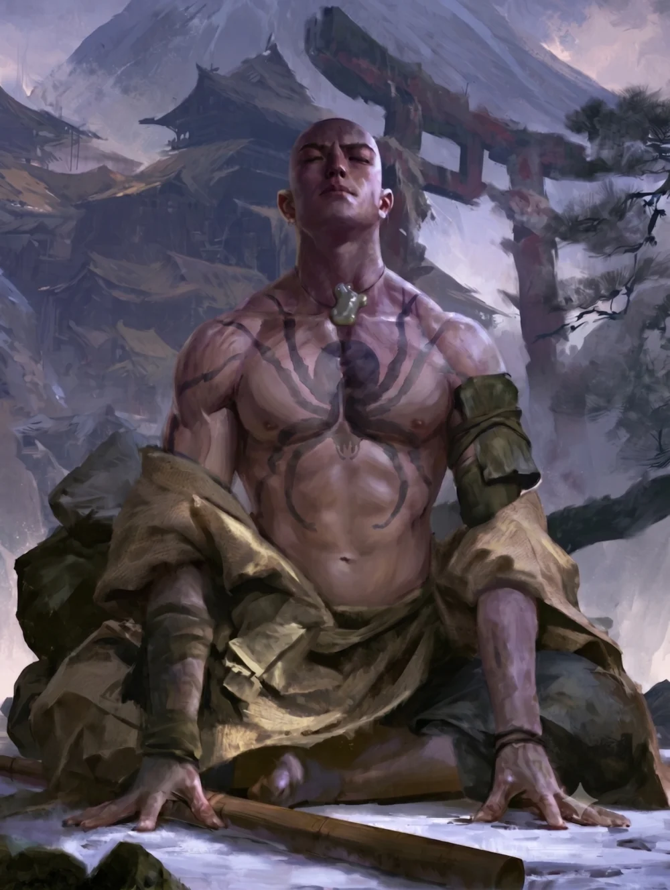

Twenty-four years ago, in the deep winter of the Dragon mountains, a child was born who did not cry. He lay clear-eyed and calm while the priest who read the omens proclaimed that he would reverse his family's ill fortune, and that the Wrath of the Kami — whose winter eruption is as dependable as the turning of the year — would not wake again within his lifetime. The mountain slept that winter. It has slept every winter since. The boy is now a monk of the Togashi Tattooed Order, and the Agasha who watch the mountain have not been at ease in twenty-four years.
The Portent
The Togashi are not a bloodline but a monastic order: ascetics and tattooed mystics who follow the Kami Togashi, the prophet who excused himself from the Tournament of the Kami by seeing its outcome. Norikage's parents urged him toward it. He was sixteen when he made the climb to the High House of Light to pledge himself and take the ink.
He does not treat the prophecy as a blessing. He is afraid it was accurate — not that the mountain's waking would kill him, since he does not hold his death and the eruption to be bound together, but that a life can be a clock, and that something is being counted toward. He says so rarely. Others, he thinks, look at him and see the omen rather than the man.
The Monk of the Spider
Through the Order's Blood of the Kami, Norikage bears a single mystical tattoo — a spider, worked across both pectorals — that empowers his kihō. When he stops, kneels, and presses his palms to the earth, Earth Needs No Eyes lets him feel the reverberations of everything that moves nearby: the breath of a warrior, the footstep of an ant. He is perceptive only in stillness, and half-blind in motion. When the world knots into a problem he cannot untangle, he may seek Lord Togashi's Insight — a difficulty-two meditation in which, if the Kami wills it, a fragment of a vision arrives to point the way.
He is no warrior. His body is disciplined — fitness honed to a keen edge — but his fists are untrained and his footing in a fight uncertain. His gifts are the meditation hall and the theologian's debate, not the duelling ground. The full account of his rings, skills, and techniques lives on his character sheet.
Sincerity Above All
Norikage holds Sincerity as his paramount tenet of Bushidō and Duty as the least of them — an ordering nothing has yet required him to test, because nothing has yet asked him to be false. He would rather tell a plain truth than a loyal lie. What he wants is to study theology with the Phoenix, who appear to understand the elemental imbalance better than anyone else in the Empire. What he owes is newer. His abbot, Togashi Oharu, has sent him east alongside a village being resettled under Seiya Mori's consolidation order, to observe in a religious capacity and report back to the temple. He stands outside the daimyō's chain of command and is responsible for moving no one. What he is meant to watch for was not specified.
His parents called him studious and tangential, the path between one thought and the next legible to nobody but him. He is an inadvertent traditionalist: new ideas are hard for him to hold even when they interest him, and he knows it, and it worries him. Under stress he does not lash out. He slows down, which in a conflict is the more expensive failing.
Twenty Questions
Set down at his making, and binding on what follows.
Possessions
He carries what a monk on the road carries: a bō that serves as a walking staff, common clothes, a traveling pack of four days' rations and the tools to make a fire. Two things he keeps nearer than the rest — a Jade Tadpole, a charm given him by the priest who attended his birth, and a green sash worn always on the left arm, whose meaning he has not explained.